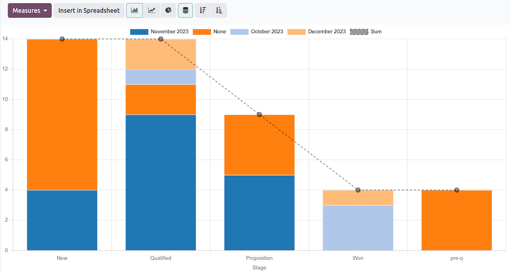

TechNext sets up Odoo CRM so no enquiry slips through the cracks. Every message, guest and repeat diver sits in one visual pipeline — with reminders, quotations and forecasts built in — so the front desk always knows who to follow up and when.
Your pipeline, on one board. Each enquiry is a card that moves stage by stage — new, quoted, deposit paid, booked — with the expected value on every column. Drag and drop to reorganise, and see exactly where the week's bookings stand.
Schedule a call, a message or a quotation in a couple of clicks — and Odoo plans the next step for you, so a keen diver is never left waiting for a reply.


Incoming emails drop straight onto the right enquiry, and every call, message and note lives on the guest's timeline. Anyone at the front desk can pick up the conversation exactly where it left off.
Turn an enquiry into a polished quote instantly. Pick the package from your catalogue and Odoo builds the rest — branded, priced and ready to send, with online payment and e-sign attached.


Real-time dashboards show where enquiries come from, which packages convert and how the team is performing — so you double down on the channels and offers that actually fill the boats.
Auto-create enquiries from the website, assign them to the right person and schedule the next activity.
Send quotes and move enquiries along with drag-and-drop — no spreadsheets, no re-typing.
Odoo ranks enquiries by how likely they are to book, so the team spends time where it pays off.
Create, import, nurture and score every guest and dive club in one shared address book.
CRM feeds Sales, the website, email marketing and the front-desk conversations — one need, one app, expand as you grow.